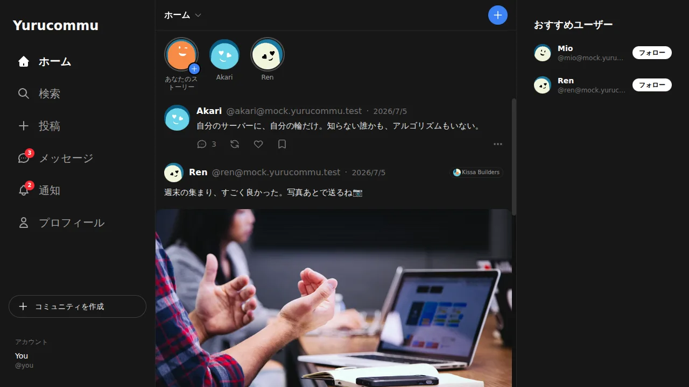
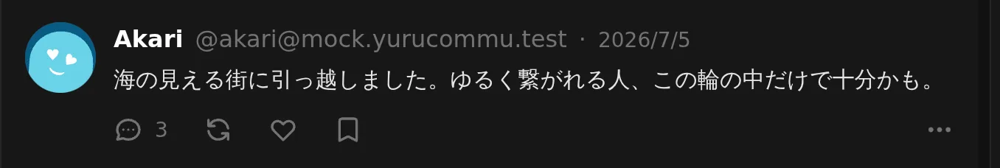
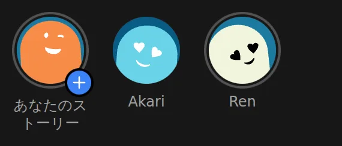
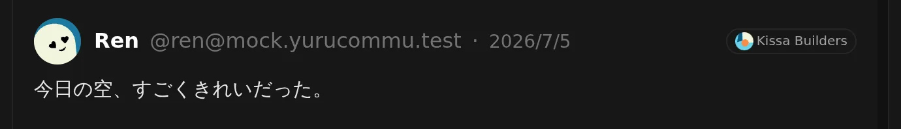
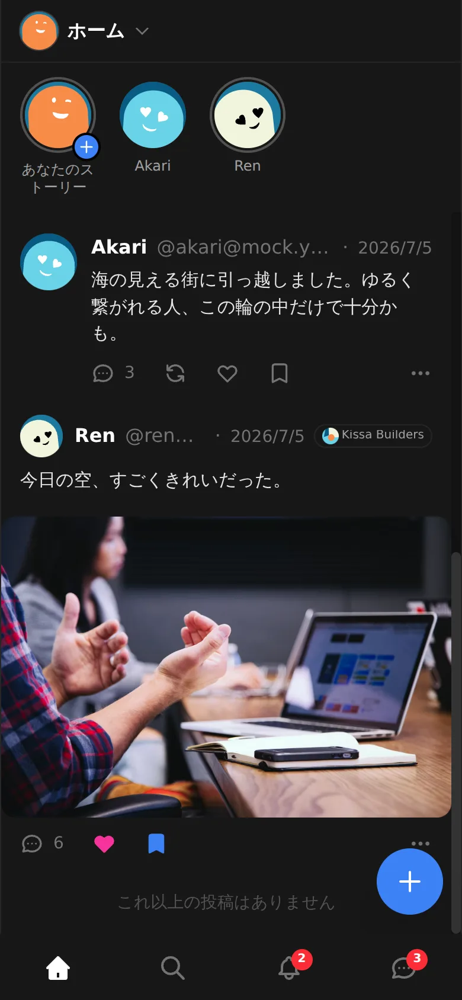

自分ひとりのための、小さな SNS です。フォローした相手の投稿を時間順に読みながら、つながる相手と コミュニティを自分で選べます。

あなたのドメインで動く、あなただけのタイムラインです。
届く範囲は、
自分が広げた輪の中だけで、いいです。
タイムラインはおすすめ順に並べ替えません。自分がフォローした相手の投稿を、時間順に表示します。
興味でつくる小さなコミュニティが、そのまま「届く範囲」になります。薄く広い繋がりより、濃くて小さな繋がりを大切にします。
セルフホストでは、運用先やデータの置き場所を自分で選べます。 ActivityPubに対応する別のサーバーとも、フォローや投稿を やり取りできます。
フォローした相手の投稿を、時間順に表示します。おすすめ順への 並べ替えを気にせず、自分のペースで読めます。

キャンバスエディタで自由に描いたり書いたり貼ったりできます。24時間後には消えるので、身軽に使えます。

興味でつくるコミュニティが、投稿の届く「輪」になります。全世界に向けて発信する必要はありません。

ホーム画面から開けば、タイムラインも、ストーリーも、DM も使えます。あなたのサーバーが、そのままポケットの中に入ります。

bun run dev:mockで画面と機能を確認します
管理ホストでは deploy/takoform、Cloudflareで
セルフホストする場合はルートの main.tf または
wrangler.jsonc を使います。詳しい手順は
デプロイガイドにあります。
ActivityPubに対応する別のサーバーと、フォローや投稿を
やり取りできます。
小さな場所から、必要な相手へつながれます。